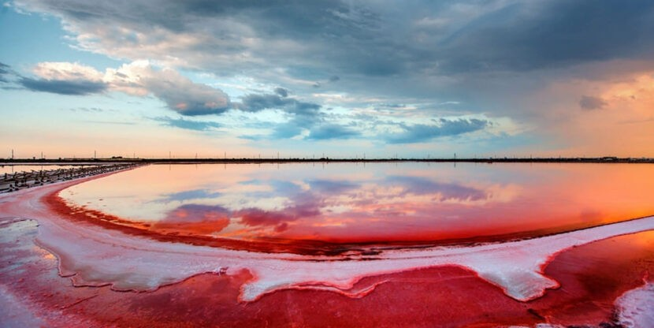
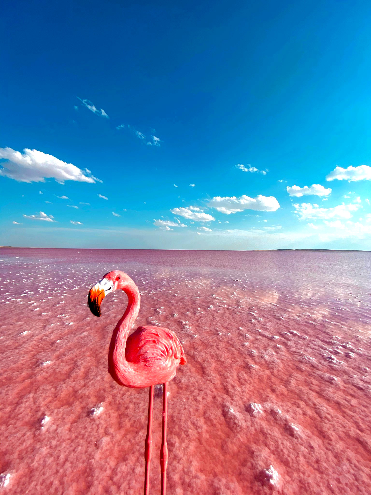
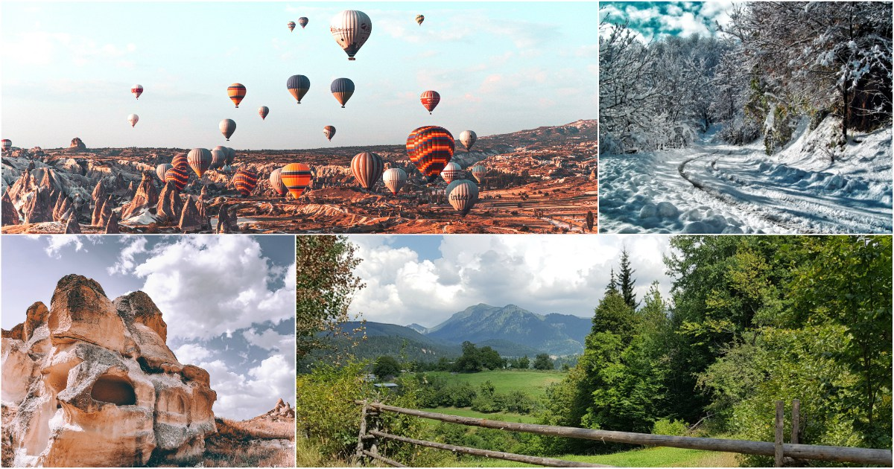

Туреччина та її краєвиди


Туреччина
Це гірська країна. Середня висота її території над рівнем моря становить 1132 м. Майже всю її територію займає Малоазійське нагір'я. На півночі Туреччини простягаються Північноанатолійські (Понтійські) гори, а на півдні території розташована гірська система Тавр.
Природні ресурси Туреччини ще недостатньо вивчені, проте там виявлені великі запаси різноманітних корисних копалин. У надрах країни залягають кам'яне і буре вугілля, нафта, різні рудні копалини: залізо, свинець, цинк, марганець, ртуть, сурма, молібден. По запасах хромової руди Туреччина займає друге місце в капіталістичному світі. Тут маються найбагатші поклади вольфраму, відомо біля ста родовищ міді.
З нерудних копалин відомі родовища селітри, сірки, мармуру, морської ненки, повареної солі. Природною солеварнею, що постачає сіллю всю Туреччину, є оз. Туз.
Озеро Туз
Це одне з найбільших озер, наявних на території Туреччини.
- Воно вбирає в себе два повноводних струмка і утворює солоне болото. Проте в літній час, коли світло сонця досягає підвищеної температури, більше вісімдесяти відсотків озера пересихає, і з’являється тридцяти сантиметровий шар солі.
- Зберегти баланс допомагають випадають опади і підземні джерела. У зимовий час шар солі йде з-за великої кількості прісної води, яка приходить з найближчих поверхневих і ґрунтових вод.
- Це диво природи розташовується в Центральній Анатолії, всього в двох годинах їзди від мулу Коньї. Місцеві жителі старанно займаються промисловістю, пов’язаної з обробкою солі та її реалізацією на незліченних ринках Туреччини.
- Між іншим, Туреччина щорічно викачує тут близько ста п’ятдесяти тонн солі, яка за хімічним складом дуже нагадує кухонну.
- Містяться в озері Туз бактерії і мікроводорості при високому випромінювання ультрафіолету надають воді червоний відтінок. Такі зміни в кольорі, немов магнітом, притягують цілі зграї фламінго, боривітри і величезна кількість білолобих гусей.



Клімат Туреччини
Територія Туреччини знаходиться у межах субтропічного кліматичного поясу. Переважна частина Туреччини має літній сезон зі значними опадами та зимовий сезон з помірними опадами, іноді із снігом, особливо в гірських областях. Такий різноманітний клімат дозволяє розвивати різні види сільськогосподарської діяльності в різних регіонах Туреччини.
Чорноморське побережжя Туреччини відрізняється помірковано теплим кліматом, що характеризується великою вологістю, порівняно рівномірним розподілом опадів по сезонах року, печінкою влітку та прохолодною зимою. Середня температура січня на побережжі –1-5, +7°, липня +22, +24°.
Високі Понтійські гори взимку захищають Чорноморське побережжя від впливу холодних повітряних мас внутрішніх районів країни, а Чорне море зменшує вплив холодних північних вітрів. Крім того, східна частина Чорноморського узбережжя захищена від проникнення холодних вітрів високими Кавказькими горами.
А про культуру Туреччини читай тут!
Рослинний світ Туреччини
Флора Туреччини включає близько 6700 видів рослин, з них велика частин-це представники сімейств складноцвітих, бобових і крестоцвітних.
Рослинний покрив Туреччини дуже різноманітний. Він змінюється в залежності від кліматичних умов і рельєфу місцевості. Значні зміни в природний рослинний світ Туреччини вніс людину: великі простори степів розорані, нанесена велика втрата лісам, особливо в Західній Анатолії - найбільш населеної частини Туреччини.
На південному узбережжі Середземного моря переважають субтропічні рослини, такі як пальми, оливки та цитрусові. У гірських регіонах, особливо на сході країни, велика кількість хвойних лісів та альпійських рослин.
На сході Туреччини також ростуть численні види лікарських трав, такі як тим'ян, шавлія та чорниця. Внутрішня частина країни відома своєю степовою рослинністю, де ростуть різноманітні види трав'янистих рослин, таких як полин, ячмінь і соняшник.
А про національні свята Туреччини читай тут!